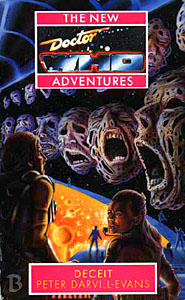

|
Deceit
|
BASIC PLOT DOCTOR COMPANIONS MATERIALISATION CIRCUIT Pg 298-299 A Spacefleet base on Garaman. PREPARATORY READING CONTINUITY REFERENCES Pg 4 "Nothing we can do will maintain the Daleks at viable deep-space battle strength for more than six years." Yes, those Daleks. Pg 23 "The name's new - they changed it after the Cyber Wars - but the core company originated on Earth in the 2100s." The core company was originally Eurogen-Butler, partly formed out of the Butler Institute, first seen in Warhead. But see Continuity Cock-Ups. Pg 28 "The Industrial Crisis and the Dalek Plague and Invasion were taught in schools that were light years away from Earth." The Dalek Invasion of Earth. Pg 32 "The same policy had protected the planet from contamination by the plagues that the Daleks had unleashed" The Dalek Invasion of Earth. Pg 33 "A tuneless rendition of My Dalek Lover is a Sex Machine." Well yes, he would be. Pg 35 "I'm on - er, secondment, I suppose you'd call it, from IMC." Colony in Space. Pg 42 "It's called a tesserect. It was a present. From a guy I travelled with for a while." In Love and War, pg 69. Pg 49 "Professor Bernice Summerfield was worried. She was going to win." She here beats the Doctor at four-dimensional chess, continuing her winning streak against him in ordinary chess from Love and War and The Pit. Which must surely make her a grand chess mistress, by default? Pg 50 "Ace's decision to leave the TARDIS hadn't been taken only because she'd fallen for that wide-boy traveller on Heaven who'd died destroying the Hoothi." Love and War. "Had he been affected by the destruction of the Seven Planets?" The Pit. Pg 51 "'If I were you Romana,' the Doctor had said, conspiratorially, 'I should stay in your room for a bit.'" The Doctor's Time Lady companion and occasional wife (Armageddon Factor et al). Pg 57 "'Back where I come from, people call this a baseball bat. This one's got added extra pizzazz.'" Remembrance of the Daleks (but see Continuity Cock-Ups). Pgs 60-61 "A young man, clean shaven, clearly ill, was barely conscious in a bath chair. A young woman - short, with elfin features, chestnut curls and soft brown clothes - was struggling to push the chair along a corridor very like these; another woman, taller, a little older, dressed in some sort of uniform, was a few steps further on, looking back and frowning." Castrovalva. Pg 61 "Brave heart, he told himself as the door opened." His frequent saying to Tegan. Pg 71 "The TARDIS had been going wrong since before she had started travelling in it." Since Cat's Cradle: Time's Crucible. Pg 75 "These were iceworld-sized goosebumps" Dragonfire. Pg 78 "He'd sacrificed himself in a suicidal attack on the central reactor of a Dalek Death Wheel." The DWM comic, Nemesis of the Daleks. Pg 81 "It started to unfold. Each face of the cube fell open, and each face was itself a cube, itself opening into other cubes." The tesserect is quite similar to the device the second Doctor used to summon the Time Lords in The War Games. Pg 82 "Mel. Peri. Spectrox -nasty stuff. Nil by mouth, I'd say. Daleks. Ah yes. And Davros. Earth, London. Twice. Three times. Oh. Susan. Susan." Mel and Peri were companions of the sixth Doctor. Spectrox caused the regeneration from the fifth to sixth Doctors, in The Caves of Androzani. You all know who the Daleks are. Davros was their creator, originally featuring in Genesis of the Daleks and most recently in Journey's End. Daleks did invade London three times: The Dalek Invasion of Earth, Day of the Daleks and Remembrance of the Daleks, although the reason for the "twice" is presumably because one of these was wiped from the timeline. Susan was the Doctor's granddaughter, first seen in An Unearthly Child, whom he left behind in The Dalek invasion of Earth. "There are grey areas. Block transfer computations, for instance. Something to do with chameleon circuits, whatever they are." Both were important in Logopolis. Pg 83 "'Nyssa,' he said. 'Tegan. They helped. pushed me in a chair.'" Castrovalva. Pg 84 "You never used to tell me what was going on." Misquote from The Curse of Fenric. "You remember when the TARDIS was destroyed? And then there was that business in Turkey and New York and all that. And then we went to that Tir-na-n-Og place, and got the stuff to finish fixing the TARDIS." Cat's Cradle: Time's Crucible, Cat's Cradle: Warhead, Cat's Cradle: Witch Mark. "After that you went moping round on the Yorkshire moors." Nightshade. "I got you out of that mess at the radio telescope, and did I get any thanks? No, I got my heart broken, instead. No, I didn't. But maybe Robin did." Nightshade. "And then you hardly spoke to me at all on Heaven. And I met Jan. And you let him die." Love and War. Pg 85 "There was an impurity in the organic matter I used to refuel the link with the Eye of Harmony." The Eye of Harmony first appeared in the Deadly Assassin. The fact that the TARDIS has an explicit link to it here predates the Telemovie by three years. "The protoplasm from Tir-na-n-Og must have contained a small fragment of one of Goibhnie's experiments." Cat's Cradle: Witch Mark. "You needed me, so you stopped me staying with Robin. You needed me, so you let Jan die. And then you made me leave the TARDIS." Nightshade, Love and War. "She'd long ago consigned both Robin and his bicycle, and Jan and his snake tattoo, to the lucky escape category of old lovers." Nightshade, Love and War. Pg 86 "It's the console from the tertiary control room, isn't it?" We saw the tertiary control room in Nightshade (pg 27). Pg 90 "'Daleks?' The Doctor seemed amused. 'Yes, you always did seem to have a way with our metal-skinned friends.'" Remembrance of the Daleks. Pg 100 "Tea would do. Even Eridanian brandy." Bernice would continue to drink this, in Blood Harvest (pg 32) and Shakedown (pg 41). Pg 106 "She'd handled Daleks on her own; why not a DK?" Remembrance of the Daleks. Pg 107 "She didn't tell him that she knew he was going to die by self-immolation, that he was destined to be destroyed himself while destroying the Daleks' instrument of planet-wide genocide." Nemesis of the Daleks. Pg 108 "And I can't, she thought, because if I do you won't live to destroy the Daleks' Death Wheel." Nemesis of the Daleks. Pgs 142-143 "By the Rod and the Sash, what have I done this time?" The Rod and Sash of Rassilon appeared in The Invasion of Time. Pg 146 "I think I've identified where this anomaly comes from. And it comes from something I did on Earth. I thought it was very clever and successful at the time." Cat's Cradle: Warhead. What he did at the time was affect the Butler Institute's development, so that it was forced to clean up the Earth, but this led to the creation of Spinward and now Arcadia. Pg 172 "Why doesn't his hat blow off, Francis wondered." The Doctor's hat was similarly wind resistant in Timewyrm: Apocalypse (pg 28). Pg 188 "In the old days, Defries had read, when humankind was still stuck in one planetary system, when the Martians and the Cybermen had come back,the soldiers were genetically manipulated to follow their leaders" The Seeds of Death, The Wheel in Space. Pg 191 "Cybershit and Dalek dung!" By this point you're probably familiar with both the Cybermen and the Daleks, although you may possibly be less familiar with their collective faeces. Pg 209 "Ice-queen Defries. I bet she goes for Cybermen." Involving Cybersex, one presumes. Pg 214 "She makes that bastard Kane look like a social worker." Dragonfire. Pg 215 "Arcadia was a Spinward colony planet for centuries. It's all in the Matrix." The Matrix was first seen in The Deadly Assassin. Pg 216 "I put a spanner in the works of one of the companies that later merged to form Spinward." Cat's Cradle: Warhead. "I understand about three years have elapsed since you left." Love and War. But see Continuity Cock-Ups. Pg 218 "The semiotics of Double Indemnity." Likely reference to The Unfolding Text and its parody in Dragonfire. "You said you interfered with the development of the Spinward Corporation." Cat's Cradle: Warhead. Pg 221 "The best she can do, even with a link to the Eye of Harmony and the data stored in the Matrix, is to work in best estimates." Both were first introduced in The Deadly Assassin. Pg 222 "Do you think I would have let the Master grow into the megalomaniac he is if I could have prevented it?" Interestingly, at this point the Doctor still believes the Master is alive. He'll have changed his viewpoint by No Future (pg 10). "I wish I'd understood that when I had to deal with that meddling Monk." The Time Meddler. But you can see Peter Darvill-Evans writing this line and then thinking "Hang on, I've got an idea for a story arc..." (Blood Heat through No Future.) Pg 223 "The destruction of the Seven Planets would live with her forever." The Pit. Pg 224 "'They'll have to tip it on its side,' Bernice whispered. 'I know,' the Doctor said. 'Did I remember to set the internal stabilizers? I can't remember.'" Time-Flight. "The script discs from Sakkrat. The Heavenite porcelain." The Highest Science, Love and War. Pg 229 "Lie back and think of - where? Garaman? Horato? Heaven? The TARDIS? Iceworld? Perivale?" All are apparently places Ace has lived. The first two are new, but she lived on Heaven after departing the TARDIS in Love and War, on Iceworld in Dragonfire and grew up in Perivale. Pg 242 "Ace had had to break into an asteroid cruncher once, when she'd worked security for a mining corporation" Very likely IMC, as we'll see in Lucifer Rising. Pg 247 "Block transfer computation, he'd called it." Logopolis. Pg 258 "I've identified some sections that are clearly capable of block transfer calculations." Logopolis. Pgs 267-268 "There hadn't been time, on Heaven, for the two women to get to know each other. And Ace had been preoccupied with Jan." Love and War. Pg 288 "It can't end like this - you and the TARDIS, fighting the monsters, putting two fingers up to the Master." Survival. And, in fact, it didn't all end like that, because the NAs came along. "And Professor Summerfield would never forgive me if I permitted the destruction of yet another inhabited star system." The Pit. Pg 293 "I'll eject the Zero Room into the Vortex as soon as we dematerialize." The original Zero Room appeared in Castrovalva. Pool (who was inside this one at the time) will then take up residence in the Vortex and will be seen there briefly in Dead Romance (p243). Pg 297 Another reference to the Zero Room (Castrovalva). Pg 300 "Daak blew up the Death Wheel years ago." Nemesis of the Daleks. Pg 302 "'If that was the best result,' Ace said, 'I'm a Draconian.'" Frontier in Space. Pg 303 "Ace must have some ulterior motive for wanting to come back." We'll discover what it is in Lucifer Rising. Pg 304 "The Butler Institute. I turned that into a time bomb." Cat's Cradle: Warhead. Pg 307 "The aftermath of the Second Dalek war" Mentioned in Death to the Daleks. "This had been apparent during the Draconian Wars" Frontier in Space. "The catastrophic casualties suffered on worlds afflicted by the Dalek plague viruses" The Dalek Invasion of Earth, Death to the Daleks. Pg 308 "During the conflict with Draconia" Frontier in Space. "Perhaps inspired by government holovids of the Dalek invasion three centuries earlier" The Dalek Invasion of Earth. Pg 310 "The fleet had been in existence ever since the Cyber Wars" Revenge of the Cybermen. "The relatively leisurely build-up to hostilities with the Draconian Empire" Frontier in Space. Pg 313 "The harsh but even-handed justice meted out by the OEO" Given that a reference to successor organisations to the Office of External Affairs is the book's last sentence, it's very likely that this is a precursor to the Adjudicators (Colony in Space, Original Sin et al) and The Knights of Oberon (Revelation of the Daleks). OLD FRIENDS AND OLD ENEMIES NEW FRIENDS AND NEW ENEMIES Francis and Elaine, who return in Happy Endings. Pool, who returns in Dead Romance. Britta and Lacuna.
CONTINUITY COCK-UPS PLUGGING THE HOLES [Fan-wank theorizing of how to fix continuity cock-ups] FEATURED ALIEN RACES Pg 136 A hunting creature, with four hairy legs, a huge, flat-fronted, grey head, blank eyes and a mouth filled with spines. Pg 142 Counsellors, androids with hairless scalps with ridges, nodules, horns and spirals, shaped like a brain. Their coarse skin is black, purple and green. The right ear is full of complex curls and folds. They have an ungainly walk and make gurgling sounds. Each is different: one's spine is so curved that his head hangs level with his chest; another is extremely thin except at the hips, where it bulges strangely (pg 140). Some of them can fly, on wings made of wafer-thin metal (pg 277). Pg 196 Pool, the collective brains of the Spinward Corporation, who now resemble congealed fibres of grey matter. FEATURED LOCATIONS Pg 14 An X-ship. Pg 18 Arcadia. Pg 55 The Admiral Raistrick. Pg 152 An escape pod. IN SUMMARY - Robert Smith? |
|
 |